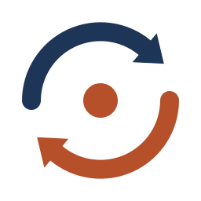

Modo demonstração
Histórico de pedidos
Todos os pedidos que você fez neste aparelho.
- 0pedidos concluídos
- 0 kgrecolhidos
- 0em andamento
Você ainda não fez pedidos. Avisar que tenho material

CicloLocalModo demonstração
Todos os pedidos que você fez neste aparelho.
Você ainda não fez pedidos. Avisar que tenho material